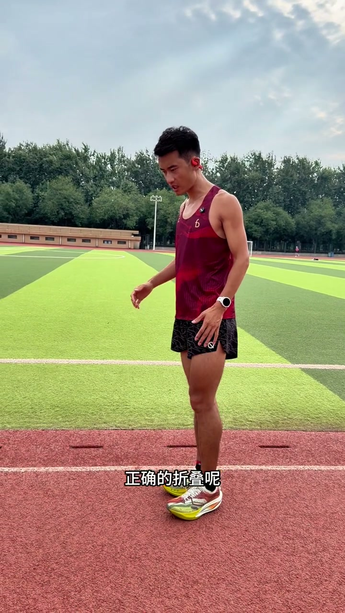
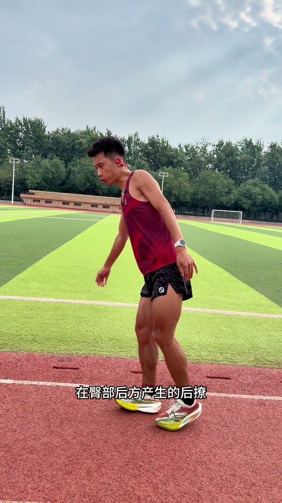
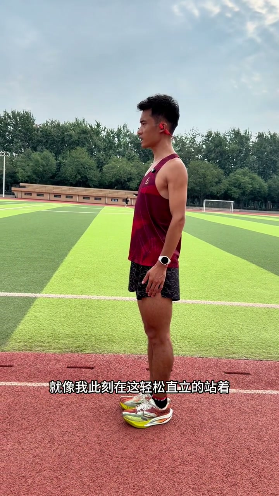
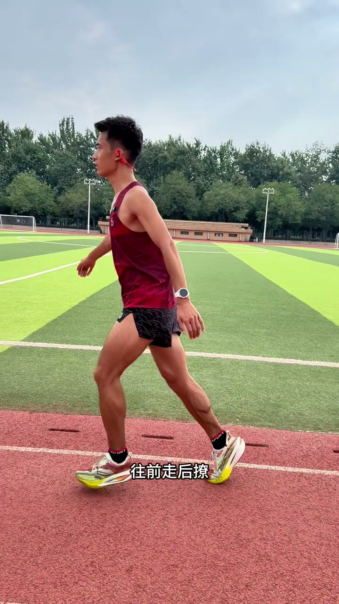
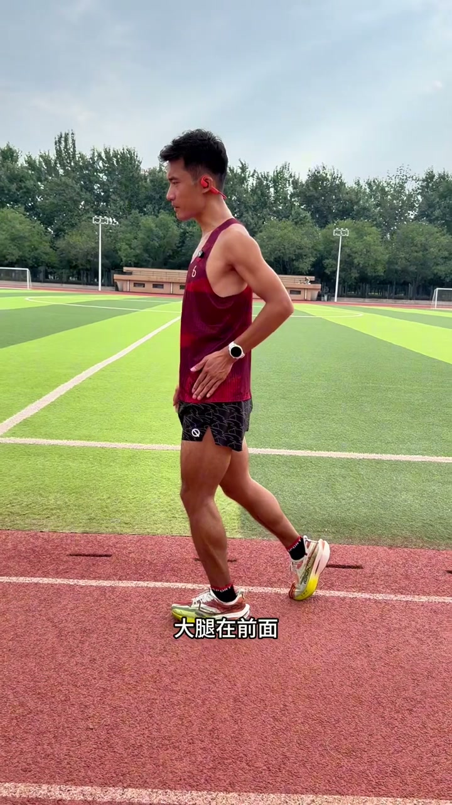
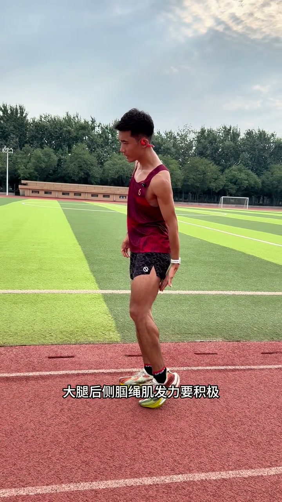
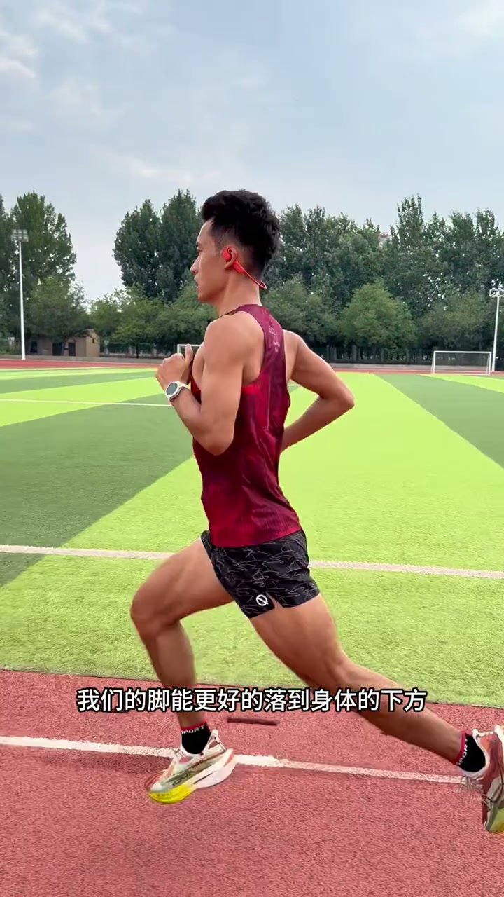

开场：腿沉的关键——折叠 vs 后撩
视频一上来就点出了很多跑者的困惑：00:00如果你跑步总觉得腿沉重拖沓，可能是你的折叠和后撩搞不清楚。今天的教学分两步——先讲清楚二者的区别，再分享如何轻松做到正确的折叠。
正确折叠 vs 错误后撩的定义
00:16UP 主先给出了清晰的区分——正确的折叠，一定是大腿和小腿在身体下方产生的折叠。而错误的后撩，一般都是大腿和小腿在臀部后方产生的后撩。一句话就把两者的空间位置区别讲清楚了。


演示：正确折叠的完整过程
00:32UP 主用站立前倾演示正确折叠的完整链条——轻松直立地站着，身体往前失去平衡的时候，大腿和小腿在身体下方产生折叠。折叠的一瞬间，脚落地瞬间重心在脚的正上方，然后重心还能更快地过了脚，身体又可以继续向前失去平衡。

演示：后撩的刹车效应
00:55UP 主接着演示了错误的后撩——身体往前失去平衡时直接去后撩。后撩之后由于惯性，小腿还会甩前去，甩到重心的前面，这样就容易产生制动。然后你的重心还得往前走，到了脚的正上方，然后再往前，脚才能离开地面。
这会大大增加你脚与地面接触时间，也会使你的腿部肌肉承受身体重量的时间更长，跑的时候可能就会更累。

核心区别：大腿在前 vs 在后
01:19UP 主点出了二者最主要的结构性区别——折叠的时候，我们的膝盖、大腿在躯干的前侧，大腿在前面，你的重心就能更快地向前。而后撩的时候，你从身体往前倒走，大腿在后面。大腿在身体后面的情况下，你的重心是前不去的。然后等大腿前来的时候，重心才能往前走。
这会大大拖慢你重心向前移动的速度。折叠让你重心始终在身体前面，后撩让你重心被锁在身体后面。

如何做到正确折叠：腘绳肌发力
01:54UP 主给出了具体发力方案——跑步的时候大腿后侧腘绳肌发力要积极，这样脚落地瞬间小腿会瞬间向上折叠，折叠会做得非常好。
02:12反过来，如果脚落地后腘绳肌半天不发力，脚落下去之后可能就会出现蹬地。蹬完地，小腿和大腿在后面拖着，大腿就前不来，重心就不会往前走。这会拖慢你向前跑的效率。

总结：腿沉不是力不够，是折叠没做对
02:52如果你跑步的时候也总觉得腿拖沓、沉重，腿在后面半天回不来，可能就是脚落地之后腘绳肌发力不积极。腘绳肌发力越积极，越能形成正确的折叠，脚能更好地落到身体的下方，跑起来也会更轻松。

※ Whisper将"腘绳肌"识别为"国生肌"，根据解剖学术语修正。将"灯地/蹬地"修正为"蹬地"。